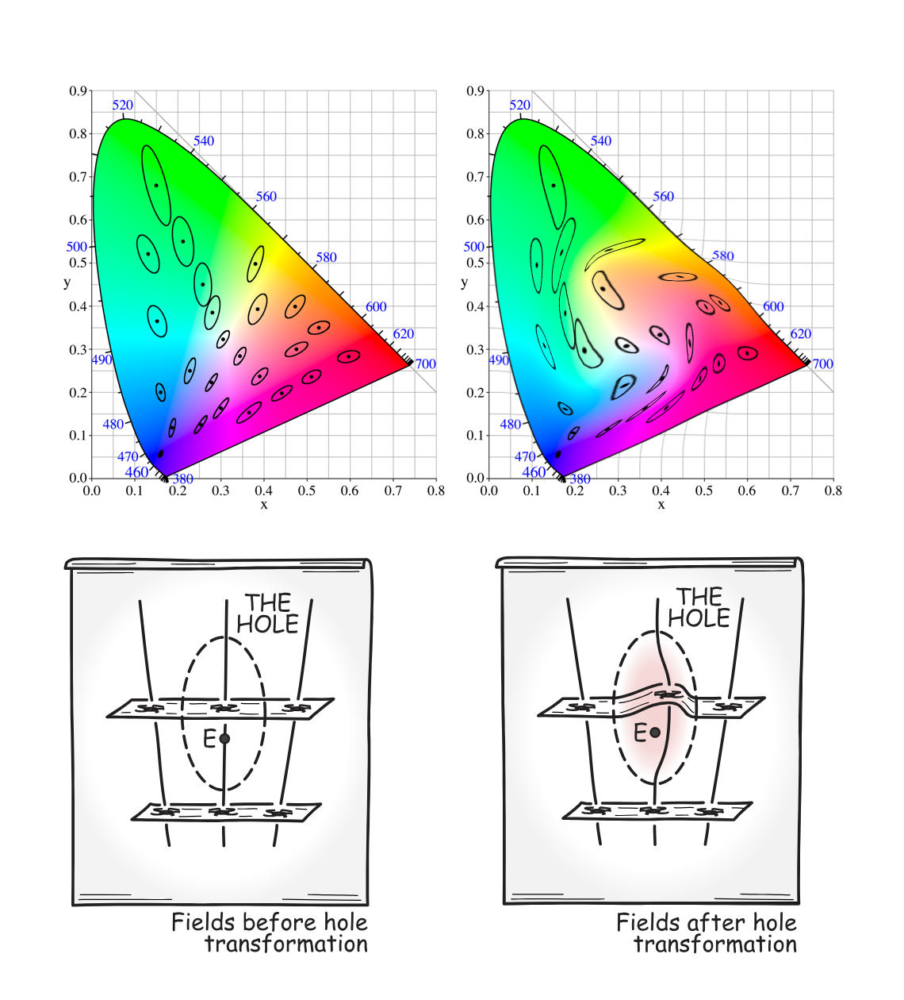
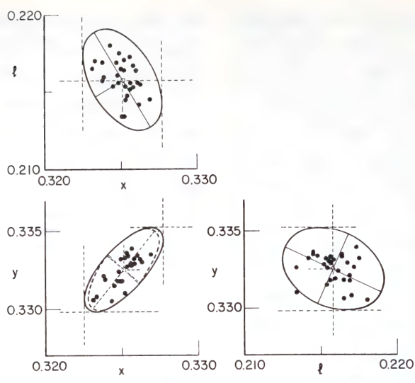

Abstract
| problems | easy | hard | meta |
|---|---|---|---|
| classical gravity | How to model astronomical phenomena with some distribution of mass-points in \(\R^3\)? | Out of all the equivalent models, which one is the right one? | Why did Newton insist on absolute space, but Leibniz on relative space? |
| general relativity | How to model astronomical phenomena with some \((\mathcal M, g, T)\)? | Hole argument: Out of all the isometric models, which one is the right one? | Why did Einstein and Hilbert fall for the hole argument? |
| color | Psychophysics: How to model human perception of color? | Qualia: Why does red feel like red? | Why are people prone to argue about the inverted spectrum? |
| language | How to model language use? | Why is language use associated with a feeling of understanding? | Why are people prone to argue about the Chinese room? |
| consciousness | How to explain objective phenomena associated with consciousness, such as attention, working memory, dreaming, etc? | Why does paying attention, dreaming, etc, feel like something? | Why are people prone to argue about the hard question? |

{kind=link}

The geometry of spacetime
In general relativity, the hole argument is a thought experiment that apparently shows that general covariance is impossible. Einstein in late 1913, and David Hilbert in 1915, both fell into the hole argument. Misled by the hole argument, Einstein attempted to study theories of gravity that are not generally covariant, before finally giving up and . (Norton, Pooley, and Read 1999)
A brief history of spacetime
The history of spacetime is a history of expanding symmetries.
In the most ancient cosmology of China, the earth is a square, while the sky is a half-bowl covering the earth. Each direction of earth – east, west, south, north – has a mystical significance. Up is not down, and east is not west. Not only that, there is a center of earth, somewhere in The Middle Kingdom. Thus, there is no spatial symmetry. The world was born an unspecified number of years in the past out of a chaotic egg. Thus, there is no temporal symmetry. Therefore, ancient Chinese spacetime is \(\R^1 \times \R^3\), with no (nontrivial) symmetry.
In Aristotle’s physics, there is a center of the universe, where everything heavy (water and earth) is moving towards, and everything light (air and fire) is fleeing from. Other than that, space is spherically symmetric – he knew that earth is round. However, though space has a center, time is translation-invariant. Therefore, Aristotle’s spacetime is \(\R^1 \times \R^3\) with symmetry group \(\R^1 \times SO(3)\), where \(\R^1\) is the time-translation symmetry group, and \(SO(3)\) is the spherical symmetry group.
The Christian spacetime, with a beginning and an end for time, has a smaller symmetry group of \(\{0\} \times SO(3)\).
Copernicus and Kepler replaced the sun for the earth as the center of the universe, but they still insisted on a center. The first true breakthrough was Giordano Bruno’s infinite spacetime, where both space and time are infinite and without center. Therefore, Bruno’s spacetime has symmetry group \(\R^1 \times E(3)\), where \(E(3)\) is the 3D Euclidean symmetry group. That is, we allow all spatial translations.
Galileo braided together space and time, resulting in an even bigger symmetry group. Specifically, he argued that the universe does not have a special “at rest” velocity. To see why this is a breakthrough, consider what happens in Bruno’s universe. In Bruno’s universe, it matters whether you are staying still, or moving at \(1 \;\mathrm{m/s}\) relative to the universe. If you are staying still, then your trajectory is like \(\dots, (t_0, p), (t_1, p), (t_2, p), \dots\). Metaphorically speaking, you are sitting somewhere in the cinema of spacetime, and you can “peek at the number of your seat” and see that you have been sitting at the same space-point \(p\). However, if you are moving relative to the universe, you can see that your space-point is changing.
Galileo rejects this. There is no “space-point”. You can take a slice of the universe at \(t=0\), and another slice of the universe at \(t=1\), but you cannot point at a point in each slice and ask, “Are these two points the same space-point?”.
Newton’s concept of spacetime is harder to conceptualize. He understood Galileo’s point, and initially attempted to model spacetime the same way as Galileo did. However, for obscure reasons, he reintroduced absolute space and time. This had strange consequences that Leibnitz relentlessly criticized. Consider the inertial frame, relative to which the sun is standing still at this moment. Now consider another inertial frame, moving at \(1 \;\mathrm{m/s}\) in the direction of Sun-to-Mars at this moment. The laws of Newtonian mechanics are the same, and no observation or experiment could tell us whether one of them is the “absolute frame”, or neither of them is. Yet, out of the infinitely many inertial frames, Newton designated precisely one of them as the “absolute”, and all others are defined as those moving at constant velocity relative to the absolute frame. (DiSalle 2020)
To dramatize this seemingly arcane point, consider the following imaginary conversation between Newton and Leibniz about a grant proposal to find the absolute frame:
This is a proposal to find the absolute frame…
How would you find it? The only difference between absolute and non-absolute inertial frames is that one of them is designated so. Do the stars turn perfectly white when you are standing still in the absolute frame? Do the music of the spheres tune to a perfect pitch? Do you see it in your mind’s eye? And even if you do, what if every material point in the universe, by an act of God, were set off in this direction [points finger up] at one mile per day? Would anything seem amiss? You yourself admit that the very sustenance of the universe requires continuous divine forcing, that the stars would have collapsed to the same point otherwise.1
… yet all relative frames has no existence without assuming the absolute frame, for otherwise, one would fall to a circular argument, where relative frames are relative to nought but each other, and the very meaning of inertiality becomes vacuous. One might as well The absolute might be hidden, but it is out there.
1In the 1726 edition of the General Scholium, Newton added a new sentence: “And so that the systems of the fixed stars will not fall upon one another as a result of their gravity, he has placed them at immense distances from one another.” Once again, the implication is that gravity can be a destabilising force. An annotation in Newton’s copy of the 1713 edition after the words “send light into all the others” shows that he had considered an even more theologically powerful statement: “and the fixed stars would, through their gravity, gradually fall on each other, were they not carried back by the counsel of the supreme Being.”
He also believed that the Great Comet of 1680 would someday fall into the sun, causing a solar flare-up that would kill all life on earth. God would then repopulate earth. In general, he thought the universe as an unstable system requiring constant divine support. (Snobelen 2020)
With special relativity, the symmetry of spacetime becomes \(SO(3, 1)\), which is in a sense more “braided” than Galilean relativity. In Galilean relativity, the symmetry group of spacetime factors into a direct product between the symmetry group of space, and the symmetry group of time. In special relativity, the symmetry group of spacetime cannot be factored into a direct product. This is the deep meaning of Minkowski’s claim that “space for itself, and time for itself shall completely reduce to a mere shadow”.
For general relativity, any diffeomorphism on spacetime is a symmetry.2 In other words, it is a generally covariant theory. This is quite a vast generalization, and warrants further details.
2 A function is a diffeomorphism iff itis one-to-one, smooth, and has a smooth inverse.
General relativity
General relativity models spacetime as a manifold \(\mathcal M\), with a metric tensor field \(g_{\mu\nu}\) and an energy-momentum tensor field \(T_{\mu\nu}\). The metric tensor describes the spacetime separation between points on the manifold, and thereby the geometry of spacetime. The energy-momentum tensor describes the flow of energy and momentum in spacetime. In particular, a body with mass \(m\), such as a black hole, is a flow of energy \(mc^2\) in time, and therefore can be described within the energy-momentum tensor.
The metric tensor field and the energy-momentum tensor field are “braided together” by Einstein’s field equation:
\[ (\text{a polynomial equation involving components of }g) = \kappa T \]
where \(\kappa\) is a constant of nature, measured by experiments.
The spacetime manifold \(\mathcal M\) can be transformed, in that we can write down a function \(f: \mathcal M \to \mathcal M\), such that it maps one point in the manifold to another point. According to general relativity, if \(f\) is a diffeomorphism, then the field equation is unchanged. In this sense, all diffeomorphisms of \(\R^4\) become symmetries of spacetime. Whereas in special relativity, inertial frames are distinguished from non-inertial frames, in that the coordinate lines in an inertial frame are deemed “straight”, no one gets special treatment in general relativity, and any smooth coordinate system is as good as any other. That is, Einstein’s field equation is generally covariant.
The hole argument
During 1912, Einstein struggled with finding a generally covariant field equation for gravity. He even considered the one he would eventually publish in 1915 and be famous for, but gave them up over certain difficulties. Then in late 1913, he tried to turn this loss into a victory by arguing that general covariance is not the right approach, because of the hole argument. (Norton, Pooley, and Read 1999)
Consider the following two models of a small universe. The universe contains three galaxies moving away from each other. The model on the left shows that one of the galaxies passes the spacetime-point \(E\), while the model on the right shows that no galaxy passes the spacetime-point \(E\).
If the universe satisfies a generally covariant field equation, then we can transform the model on the left to the model on the right by a diffeomorphism, and the equation would be none the wiser. In other words, any generally covariant field equation suffers from rampant indeterminism.
We cannot fault Einstein for “falling into the hole”, because Hilbert fell into the hole as well around the same time, though he fell in via the route of Cauchy boundary value problem. In Hilbert’s formulation, any generally covariant field equation suffers from indeterminism, in the sense that no amount of initial value on the field is enough to determine the future of the field.
That is, if we start off from a slice of simultaneity (“Cauchy surface”), and solve the equations forwards in time, we would find that we are lacking conditions. Concretely, consider the motion of water. If the universe is Newtonian, full of Newtonian water, then cosmology is just hydrodynamics. If we know the precise velocity field at a single moment in time, then we can solve the equations forward and find all there is to know about the cosmos. However, Hilbert found that any generally covariant theory fails this: No amount of knowledge of the field at a single slice of simultaneity is sufficient to determine any future or past of the field. Unlike a clockwork Newtonian universe ticking forward by ironclad laws of motion, the Einsteinian universe would “go off the rails” immediately. (Stachel 2014)
Problem of time
The old couplet about general relativity goes like “Matter tells space-time how to curve, and space-time tells matter how to move.” but this is often misunderstood as saying “Matter exists, then space-time reacts to matter, and then matter reacts to space-time by changing its motion.” This fundamentally misunderstands what general relativity is. There is no time nor causality, at least as commonly understood, in special or general relativity.
Special relativity is typically interpreted as an “eternalist” or “four-dimensionalist” theory. That is, all of space and time exist in the same way, and the future is as real as the past. Einstein said it as “the distinction between past, present, and future is only a stubbornly persistent illusion.”. It is typically supported by the Rietdijk–Putnam argument, as follows.
Whereas in Newtonian spacetime, one can still imagine that the universe somehow “grows one time-slice at a time” – though this is susceptible to McTaggart’s objection – in special relativity, there does not exist such a thing as “time-slice”, because there is no absolute simultaneity. We may pick the time-slices in the inertial frame of the solar system, or in that of the Andromeda galaxy. However, just like how no observation can distinguish Newton’s absolute inertial frame from all the other relative inertial frames, no observation can distinguish between the absolute simultaneity from all the other relative simultaneities.
The difficulty is only amplified in general relativity. Let us imagine a universe that is swirling with stars and galaxies. Locally, the spacetime manifold is curved, but globally, it is topologically the same as \(\R^4\) – no loops, no singularities, and no wormholes. Now, construct a coordinate system \((t, x, y, z)\). We can then select a “snapshot” of the universe by selecting the “slice of simultaneity” (that is, a “Cauchy surface”) at \(t = 0\). If we know the exact value of \(g, T\) on that snapshot, then we can crank the Einstein field equations to solve (up to general covariance) for \(g, T\) for all \(t > 0\). Does this mean that the slice of \(t=0\) determines what happens afterwards?
Not really. We could have smoothly distorted the coordinate system to \((t', x', y', z')\), and solve the Einstein field equations for all \(t' > 0\) starting from \(t' = 0\). There are infinitely more degrees of freedom compared to special relativity, making the RP argument bite harder.
Yet, the issue goes even deeper. We could very well select \(t = 10000\) and crank the field equations to solve for \(g, T\) for all \(t < 10000\). Does this mean that “the future determines the past?” Perhaps we can compromise by saying “one point in time determines both the past and the future”, but even that is not necessarily true. We can design much wilder boundary conditions. We can make two lightcones determine the rest of the universe (double-null, or Sachs), make one lightcone plus a “left side” of the universe determine the rest (null-timelike, or Winicour–Tamburino), make half of the universe’s left-side and half of the universe’s \(t=0\) determine the rest, etc.
Gauge freedom
The standard solution, one that is inscribed in every textbook, is the gauge freedom point of view. Even the most practical textbook on general relativity must handle the issue somehow, for the same problem that tripped up Hilbert: the Cauchy problem is not well-posed.
Concretely, consider the first serious problem in every textbook, where there is a single mass point in the universe. Pick a spherical coordinate system in which the mass point is in the center, and assume that the metric field is constant over time, and spherically symmetric, as
\[g_{\mu\nu}dx^\mu dx^\nu = f_{\text{radial}}dr^2 + f_{\text{orthogonal}}(r^2d\theta^2 + r^2 \sin^2\theta d\phi^2)\]
This then reduces to an ordinary differential equation for \(f_{\text{radial}}, f_{\text{orthogonal}}\). Note how we have made an assumption for the form of the equation for the metric field. This is by no means a benign assumption, as it is this choice that banishes the spectre of the hole argument.
Suppose we had chosen the metric field to be not constant over time, but merely spherically symmetric, then we would find that we have a whole family of solutions. Take the previous solution of \(g_{\mu\nu}\), and construct a spherical shell around the mass point. Now, we can apply the hole argument on the spherical shell to “ring spacetime like a bell”, obtaining another spherically symmetric solution. 3
3As all the Heavens were a Bell,
And Being, but an Ear,
And I, and Silence, some strange Race,
Wrecked, solitary, here –

The gauge freedom interpretation states that any solution to the field equations are equivalent. They are practically equivalent, in the sense that no observable differences exist between them. They are ontologically equivalent, in the sense that no solution is “absolute” compared to others that are “derivative”. The first claim is an experimental fact, while the second claim is a metaphysical interpretation. The metaphysical interpretation does not necessarily follow from the experimental fact, yet it is hard to admit the experimental fact and reject the metaphysical interpretation.
The parallel with the Newtonian absolute vs relative inertial frames is obvious. (Rynasiewicz 2012) noted if we apply the hole argument to a universe with no mass, we obtain a hole argument for special relativity that should imply that the one-way speed of light is also a gauge freedom.
The geometry of color
Smooth geometry
The human eye, abstractly speaking, is a light detector with 4 kinds of sensors: the rod cell, active in the dark, and 3 kinds of cone cells, active when it’s bright. Each cell carries its own kind of light-sensitive proteins (“opsins”), which are molecular switches. If a photon hits an opsin in the “passive” shape, then the opsin may absorb the photon and flip into its “active” shape. An active opsin would then set off a molecular chain-reaction in the cell, that may result in an electric signal down the optic nerve.
Mathematically, suppose we shine a light on a patch of long-wavelength-type cone cells, we can represent the electric response as:
\[I_L = \int S_L(\lambda) R(\lambda) d\lambda\]
where
- \(I_L\) is the response intensity of long-wavelength-type cone cells, in units of neural spike per second. Though each cell’s operation is quantum-mechanically random, when averaged over many cone cells, the response is deterministic.
- \(R(\lambda)\) is the spectral radiance at wavelength \(\lambda\), or spectrum for short. It has units of watt per square-nanometer (of retinal area) per nanometer (of wavelength).
- \(S_L\) is the spectral sensitivity function of the long-type cone cells.
We can similarly define \(I_M, I_S\), for the other two cone cell types (medium and short). Each \(S_L, S_M, S_S\) is approximately bell-shaped.
If we ignore the rod cells, and assume no adaptation to darkness (“scotopic vision”), then human color vision is just a deterministic function that maps a spectrum to three real numbers:
\[C(P) := (I_S(P), I_M(P), I_L(P))\]
with type \((\R^+ \to \R^+) \to (\R^+)^3\), where \(\R^+ = [0, \infty)\) is the space of non-negative real numbers. Define this as the \((I_S, I_M, I_L)\) as the LMS color space.4 Furthermore, the biochemical limit on neural firing is 1000 Hz (“Neuron Firing Rates in Humans” 2015), thus the LMS color space is bounded within a cube.
4 This seems as close to “sense data” (Hatfield 2021) as it gets in science.
Any smooth deformation of the LMS color space gives us another color space. In theory, it doesn’t matter which one we use, because the underlying color space is still the same. In practice, some color spaces are easier to use than others.

{kind=link}
In people with only two types of cone cells, the color vision function \(C\) loses a dimension. For example, if that person has deuteranopia, without medium-wavelength cone cells, then they would see all colors in LMS space with the same \((S, L)\)-coordinates as the same.
Projective geometry
Because \(C\) is a linear functional, and any two colors can be mixed to give a third color, LMS color space is a convex cone. On the tip of the cone is \((0, 0, 0)\), the color of pure darkness. It is an old experimental fact that the geometry of colors is invariant under scaling. So, if you have two lights with spectra \(P, P'\), such that their colors look the same/different/very different, then we make them brighter or dimmer, to \(cP, cP'\) where \(c > 0\), then their colors will still look the same/different/very different.
Thus, we can factor the space of colors into two components: an apparent lightness, and an apparent chromaticity. So, if we take two dim red lights, and shine both of them on the same pane of frosted glass, the frosted glass would look lighter, but have the same chromaticity. The space of chromaticities is the space of lines passing the origin, which allows us to use projective geometry.
The space of all colors looks like a cone, and since each line in the cone can be represented as a point on the line, the space of all chromaticities looks like the intersection of the cone with a plane – each line is represented by its intersection with the plane. What does the space of all chromaticities look like?
Because any spectrum \(I\) is the convex sum of pure spectra
\[\{I_{\lambda}: \lambda \in (400 \;\mathrm{nm}, 700\;\mathrm{nm})\},\]
the space of all colors is the convex sum of all pure spectral colors
\[\{C(I_{\lambda}): \lambda \in (400 \;\mathrm{nm}, 700\;\mathrm{nm})\}.\]
Consider a wall covered with a “pure spectral paint”, in the sense that it reflects exactly light at wavelength \(500 \;\mathrm{nm}\), and nothing else. Then, under any illumination, the color of the wall has the same chromaticity. Pure spectral colors are special colors, in the following diagram, on the edge of the cone are lines of pure spectral color, each produced by a spectrum that is concentrated at just one wavelength.

Because the cone shape is uninteresting, the color space is typically represented by chopping off the cone midway, producing a roughly horseshoe-shaped region on \(\R^2\), named the gamut. Mathematically, it is the projective transform: \[(s, m, l) := \left(\frac{I_S}{I_S + I_M + I_L}, \frac{I_M}{I_S + I_M + I_L}, \frac{I_L}{I_S + I_M + I_L} \right)\]
The curving edge of the chromaticity space are points of pure spectral colors, from pure \(700 \;\mathrm{nm}\) line on the red end, to the pure \(400 \;\mathrm{nm}\) line on the purple end. Every point inside the gamut can be mixed by two pure spectral colors. However, this is not the entirety of chromaticity space. The ray at the shortest-wavelength end (pure spectral purple) and the ray at the longest-wavelength end (pure spectral red) do not touch each other. Instead, they shoot out like two ends of a horseshoe. Chromaticity space, then, has a second, straight edge, obtained by mixing the shortest and the longest wavelength. This is the purple boundary.

We can construct the chromaticity space of someone with deuteranopia by starting with the purple line, then draw one line for each point on the purple line that is perpendicular to the \((S, L)\)-plane in LMS color space. The deuteranopic observer sees each line of chromaticities as a single chromaticity.
Theoretically, we can imagine creating the world’s best computer display by putting in a full-spectral display unit into each pixel. It will then be able to cover the entire gamut space. It will not only display true-life colors for humans, but also for dogs, bees, and mantis shrimps. Unfortunately, we don’t have that luxury, and computer displays are built for human-use only, with just three spectra.
Now, if we have a pixel containing three little LED units, capable of emitting light of spectra \(P_1, P_2, P_3\), then we can take any convex sum, and create a mixed color. The space of all colors created by their convex sum is the convex sum of \(C(P_1), C(P_2), C(P_3)\), which looks like a triangular cone. Thus, the chromaticity that this pixel can display is a triangle. Every color inside the triangle can be created by mixing the three spectra, but any color outside cannot.

{kind=link}
When you print on a page, the page does not emit color, and can only acquire color by selectively reflecting light. When under a standard white light, the more ink you lavish on a page, the more saturated the color can be, but the darker it would be, because more light is absorbed. Conversely, if all the light is reflected, then it would look white. Because of this trade-off, the gamut of printable colors is even smaller.
Evolution has created a multi-spectral display in some octopuses and chameleons. The best octopus camouflagers have 2 kinds of color organs in their skins: the chromatophores, the leucophores, and the iridocytes. Chromatophores contain pigment cells, which expand and contract by radial muscles like wheel spokes around an axis. The leucophores are roughly ideal “matte” reflectors, meaning they reflect incoming light uniformly, with little loss.
The iridocytes are the most exotic, and approximates our “world’s best television screen”. Specifically, they are dielectric mirrors, which reflects light at a specific wavelength. They are alternating layers of guanine crystals and cytoplasms. To change color, it simply adjusts the water content of the cytoplasm, which makes them expand or contract, changing the distance between guanine layers. More pictures are found in (Cloney and Brocco 1983).


Meanwhile, chameleons have iridocytes that operate by a different mechanism: photonic crystals (Teyssier et al. 2015).
Linear geometry
Grassmann, famous for originating linear algebra, studied color theory and applied linear algebra to it. Essentially, he discovered that the human color vision function \(C\), defined previously, is a linear function. He discovered this by color-mixing experiments, in the style of 19th century psychophysics. Considering it was 50 years before the neuron doctrine became accepted, and 100 years before cone cells were observed, he did very well.
For any three spectra \(P_1, P_2, P_3\), we can define their colors as \(C_i := C(I_i)\). Since \(C\) is a linear function, as long as \(\{C_1, C_2, C_3\}\) are linearly independent, we can represent any color as \(C(x_1 P_1 + x_2 P_2 + x_3 P_3)\) for some \((x_1, x_2, x_3) \in \R^3\).
For example, we can go to a scientific standard shop and buy a set of standard lamps, which when plugged into a standard plug, viewed in a standard room, at a standard distance and a standard angle, by a standard observer,5 will create a standard red, a standard green, and a standard blue. Then, using opaque to cover up parts of the lamp, and combining the lights, we can create any color \(C(x_1 P_1 + x_2 P_2 + x_3 P_3)\), for any \((x_1, x_2, x_3) \in [0, 1]^3\). By buying more lamps, we can create all colors with \((x_1, x_2, x_3) \in (\R^+)^3\).
5 Because humans are resistant to standardization, the standard observer is obtained by taking data from real observers in good health that are physiologically similar, and their average. The methodology resembles l’homme moyen (“the average man”) of Adolphe Quetelet, a fanatic for anthropometry. Also, the standard observer is not required to drink standard cups of tea.
Here, we notice a difficulty: we can’t take a negative amount of lamp. Fortunately, we can bypass the difficulty by adding a fourth lamp, a “standard white” lamp emitting a spectrum \(P_0\). Then, for any other spectrum \(I\), there exists \((x_1, x_2, x_3, x_4) \in (\R^+)^4\), such that
\[ C(I) + C(x_0 P_0) = C(x_1 P_1 + x_2 P_2 + x_3 P_3) \]
which allows us to place the color of \(I\) at the unique point. Of course, the choice of \((x_1, x_2, x_3, x_4)\) is not unique. However, since color space is linear, the sum \(C(x_1 P_1 + x_2 P_2 + x_3 P_3 - x_0 P_0)\) is unique. Once \(C(P_0)\) is itself constructed as a linear sum of \(C(\sum_{i=1}^3 x_{i, 0}P_i)\), we would have located \(C(I)\) in color space, at
\[ C(I) = \sum_{i=1}^3 (x_i - x_0x_{i, 0}) C(P_i) \]
This is essentially the state of the art of colorimetry in 1931, when CIE 1931 was constructed by color-mixing experiments. An observer is seated in a standard room, and sees two light sources. On the left, a to-be-measured light \(I\) is mixed with a standard white light \(P_0\), and on the right, are three standard blue, green, red lights \(P_1, P_2, P_3\). The observer turns the 4 knobs until two sides look indistinguishable. This was repeated for many observers, over many days, for many light sources. The result is a table with three columns, and many rows. Each row is an industrially important light source, and the three columns are the standard red, standard green, standard blue. It schematically looks like this (I made up the data):
| color | standard red | standard green | standard blue |
|---|---|---|---|
| standard red | 1.000 | 0.000 | 0.000 |
| standard green | 0.000 | 1.000 | 0.000 |
| standard blue | 0.000 | 0.000 | 1.000 |
| standard white | 0.334 | 0.334 | 0.332 |
| … | … | … | … |
Technically, the CIE 1931 color of a spectrum \(I\) is a point in \(\R^3\) defined by
\[ C_{\text{CIE 1931}}(I) := \left(\int I(\lambda) \bar r(\lambda) d\lambda , \int I(\lambda) \bar g(\lambda) d\lambda , \int I(\lambda) \bar b(\lambda) d\lambda \right) \]
where \(\bar r, \bar g, \bar b\) are “standard observer color matching functions”. They are not any real observer’s sensitivities, because they have negative values. Instead, they are roughly a linear transform of the real sensitivities \(S_S, S_M, S_L\), meaning CIE 1931 color space is roughly a linear transform of LMS color space.
Why did they go for a roughly linear transform? I know it’s confusing (it confused me), but it’s simply a temporary hack. Back then, they had no way to measure the neural spikes, so they had to infer the real sensitivities by indirect psychophysics data. And the negative values are for some kind of numerical stability considerations. Point being, it’s really not fundamental to science, but rather a 1930s technical hack.
Opponent process
Have you ever wondered why things seem bluer just after sunset, or under a high full moon? This is where opponent process theory and Purkinje effect comes in.
While the retina might be operating with the LMS color space, it is not what gets sent to the brain. Specifically, before leaving the retina, the spikes from the 3 cone cells and the rod cell (we are finally accounting for them now!) are linearly transformed by 3 paired-kinds of neurons within the retina, before sending down the optic nerve. Greatly simplified, the linear transform is:
\[ \begin{cases} I_{\text{Red-Green}} &= I_L - I_M \\ I_{\text{Yellow-Blue}} &= I_L + I_M - 2 I_S \\ I_{\text{Brightness}} &= 2I_L + I_M + 0.05 I_S + I_R \end{cases} \]
In words, the Red-Green-pair of neurons take the long-wavelength (reddish) cone cells, and subtract away the medium-wavelength (greenish) cone cells. If the result is positive, then the positive half of the pair sends down a signal at the rate of \(I_L - I_M\), otherwise, the negative half of the pair sends down a signal at the rate of \(-(I_L - I_M)\). This linear transform, while mathematically equivalent (as long as the rod cells don’t appear) to LMS space, allows the optic nerves to carry more information in Homo Sapiens’ natural habitat (Buchsbaum, Gottschalk, and Barlow 1997).
When the light level is around \(0.5 \;\mathrm{lux}\), which corresponds to twilight, or a full high moon, both the rod cells and the cone cells are active (Dominy and Melin 2020).
So, let us look at the linear transform
\[ \begin{cases} I_{\text{Red-Green}} &= I_L - I_M \\ I_{\text{Yellow-Blue}} &= I_L + I_M - 2 I_S \\ I_{\text{Brightness}} &= 2I_L + I_M + 0.05 I_S + I_R \end{cases} \]
Let’s pretend we are the brain, interpreting the signals sent down the optic nerves. Suppose the retina secretly increases \(I_R\) by a small amount of \(\Delta I\), but we don’t know that. How would we interpret it? We would interpret it as a color in LMS space with color
\[(I_S + \Delta I', I_M + \Delta I', I_L + \Delta I')\]
where \(2.05\Delta I' = \Delta I\). That is, it looks as if each type of cone cell has increased firing rate by the same amount. Looking at the sensitivity curve, this effect can be created by shifting the spectrum to the shorter wavelength, then increase its power slightly. Thus, things look bluer.

{kind=link}
Riemannian geometry
Magnitude-notions are only possible where there is an antecedent general notion which admits of different specialisations… the only simple notions whose specialisations form a multiply extended manifoldness are the positions of perceived objects and colours. More frequent occasions for the creation and development of these notions occur first in the higher mathematic.
Riemann’s Habilitation dissertation, 1854 (Riemann 2016)
Now that we have a space of colors, how do we measure distances in it? Some colors are close, while some colors are far apart. How do we quantify it? This question occupied the minds of some famous scientists, including Riemann, Grassmann, Helmholtz, and Schrödinger (Pavlidis 2021).
In 1920, Schrödinger (more famous for his other equation) hypothesized that color space has a Riemannian geometry, and the subjective difference between two colors is the geodesic distance between the two points in color space (Schrödinger 1920). This is the foundation of modern colorimetry (Niall 2017). Over the years, there had been a mess of increasingly detailed theoretical models for the Riemannian metric of color space, of interest only to specialists – see (Wyszecki and Stiles 1982, chap. 8.4) for a review. Here, we bypass most of the theory by experimental data.
Given two spectra \(I, I'\), if their colors \(C(I), C(I')\) are close enough, an observer would judge them as equal. This is the concept of “just noticeable difference” (JND), a foundational concept of psychophysics.6 In general, the JND method goes like this:
6 One can get a good feel for the JND by playing the Color Game. In case this fails in the future, try the archived link.
- Fix one stimulus \(S\), and vary the other stimulus \(S'\). The prior probability that \(S = S'\) is \(1/2\).
- Present both \(S, S'\) to the observer.
- The observer judges whether they are the same or different.
- Repeat many times.
- If, when truly \(S' = S\), the observer judges that they are the same with probability \(p_0\), then the JND point is the point where the observer judges that \(S' = S\) with probability \(p_0/2\).
In the original experiments, MacAdam fixed one spectrum \(I\), and varied the other spectrum \(I'\) on a curve that passes \(I\). He repeated the JND measurement along many curves across many spectra, and found that around each spectrum, the JND points make up a rough ellipsoid.
If the JND measurement is binary classification in color space, then what is real-valued regression in color space? Answer: color matching experiment.
Specifically, suppose we fix \(I\), and let the observer turn a knob that varies \(I'\) along a curve passing \(I\), then we would find that \(I'\) is normally distributed centered upon \(I\). Perform the experiment with 3 knobs, and we would obtain an ellipsoidal cluster. The ellipsoids of \(1\sigma\) are the MacAdam ellipsoids. As ellipsoids are very hard to draw, we typically only see 2D slices of them – the MacAdam ellipses.

Given two colors \(C_0, C_1\), we can construct the geodesic curve between them as the shortest sequence of colors \(C_a, C_b, C_c, \dots\), such that \(C_0, C_a\) are JND, and \(C_a, C_b\) are also JND, etc. It sounds reasonable in my head that, if \(C_0, C_1\) have the same perceived lightness, then the geodesic connecting them should all have the same perceived lightness, because it seems like we would be wasting some precious JND on “jumping up in lightness, only to jump down again”. Similarly, if \(C_0, C_1\) have the same perceived hue, then I guess the geodesic through them would stay along the same perceived hue.
If this is true, then we can construct two families of foliations in color space, one for equal-lightness surfaces, and one for equal-hue surfaces. Each surface is a totally geodesic foliation (Johnson and Whitt 1980), meaning that each geodesic within a foliation is also a geodesic in the total color space.
However, this definitely isn’t true for perceived saturation, as the shortest path between slightly saturated red and slightly saturated green (opposite of red) goes through perfect gray, so who knows whether this conjecture is true or not?
Though JND and color matching are two different methods, they are both using people as statistical detectors, and it stands to reason that they should measure the same thing. Indeed, the ellipsoids of JND are roughly the \(3\sigma\) MacAdam ellipsoids (Wyszecki and Stiles 1982, sec. 5.4).

Given the Tissot’s indicatrix, it is natural to try to draw a distortion-less map of earth, where all Tissot ellipses are equally-sized circles. This is impossible, and Gauss knew exactly why: earth has positive gaussian curvature, but a flat sheet of paper has zero gaussian curvature.

{kind=link}
Given the MacAdam ellipses, it is natural to try to draw a distortion-less map of color space. This is impossible, for the same reason: color space has nonzero curvature. It was already known to MacAdam in the 1940s that his experimental data shows color space has significant curvature.

Is it possible to at least stretch the MacAdam ellipses into spheres, even though they aren’t of the same radius? That is, is color space conformally flat? For example, in Mercator’s projection, the Tissot ellipses are indeed circular, though they become larger near the poles, so earth is conformally flat.
However, by Liouville’s theorem, conformal flatness is very stringent at 3 dimensions and above, so my conjecture is that color space is not conformally flat. Proof sketch: download the metric tensor from CIE, and check its Cotton tensor is (statistically) nonzero.
CIELAB color space is a smooth mapping from CIE 1931 color space to \(\R^3\), such that the MacAdam ellipses are stretched spherical enough for practical purposes.
{kind=link}
Information geometry
Imagine a hiker navigating a mountain path equipped only with an altimeter and a detailed altitude map. The hiker’s ability to pinpoint their location on the map relies on sensing altitude changes. In regions where the terrain is steep (representing high sensitivity), even a small step forward (change in stimulus intensity) will register a noticeable altitude change on the altimeter (change in perceived sensation). This allows for precise localization – a small JND. However, along flatter sections of the trail (low sensitivity), the hiker might need to traverse a longer distance to observe a meaningful altitude difference, leading to a larger JND and greater uncertainty about their position on the map.
Similarly, as we move around in color space, we may distinguish colors by the photoreceptor responses, which can be inferred from the sensitivity curves \(S_S, S_M, S_L\). That is, we can reduce Riemannian metric to information geometry. Working this out in detail, (da Fonseca and Samengo 2016) showed that the Riemannian metric in color space is roughly the same (“explains 87% variance”) as the Fisher information metric.

In the same vein, people have argued for centuries about why certain colors are perceived as “pure” or “primary” (white, black, red, blue, green, etc), while others are “mixed” or “derived” from the primary colors. (MacEvoy 2015) argues that the primary colors are “landmarks” in the geometry of color space, much like how on a map, the peaks and troughs are local maxima of gaussian curvature, and the mountain passes are the local minima, or how on a spacetime, a black hole singularity is the point where the Kretschmann scalar is infinite. Intuitively, we can see this on the CIELAB color solid. The top-most point is white, the bottom-most color is violet, and you can just see yellow at another point behind the back, etc.
While color space is locally Riemannian, this is not so over longer distances. That is, once we are measuring the subjective distances between pairs of far-different colors, the data no longer behave like distances on a curved 3D space. (Bujack et al. 2022) reported that there is “diminishing returns” in color distances.
Indeed, this non-Riemannian geometry has been known for a while. CIE in 1994 proposed a color difference, \(\Delta E\), that is not symmetric. That is, if we ask a subject “How far is color 1 from color 2?” and then ask the opposite direction, we usually get a different numerical answer. This reminds me of information-geometric divergence, which is also not symmetric. I cannot find anyone who has studied this in detail, but it ought to interest the information geometers.
The geometry of feeling
Easy, hard, meta
David Chalmers proposed three problems of consciousness.
The easy problem is the scientific problem of the brain: how memories work, how vision recognizes objects, etc. By “easy”, Chalmers was not dismissing them as “intellectually easy”, but that they are within the paradigm of science as currently understood. They are about as easy as colonizing Mars or curing cancer.
The hard problem is the easy problem, but with something extra that seems impossible to even fit into a scientific system. What that something extra is, philosophers are unable to say, but they typically give it the name of “qualia”, “experience”, “phenomenal awareness”, etc.
What makes the hard problem hard and almost unique is that it goes beyond problems about the performance of functions. To see this, note that even when we have explained the performance of all the cognitive and behavioral functions in the vicinity of experience—perceptual discrimination, categorization, internal access, verbal report–there may still remain a further unanswered question: Why is the performance of these functions accompanied by experience?
While decades of science have made good progress on the easy problem, centuries of philosophical disputations have not made progress on the hard problem. To bypass the impasse, Chalmers proposed the meta problem: Why is the hard problem a problem?
What exactly are the problem data that need explaining? They can be construed as verbal reports (my saying ‘Consciousness is hard to explain’), as judgments (my forming the judgment that consciousness is hard to explain), or as dispositions to make these reports and judgments. Verbal reports are perhaps the most objective data here, but they are also a relatively superficial expression of an underlying state that is really what we want to explain. So I will generally focus on dispositions to make verbal reports and judgments as what we want to explain.
The easy problem of consciousness, being part of the domain of science, excited little philosophical attention, while the hard and the meta problems excited a vast discourse. It is not within my power to review the literature, though it might be within my power to solve them.
Let’s consider an analogy. The easy problem of biology would be: How does biological machines work? The hard problem: Why is the performance of these functions accompanied by life? The meta problem: What kind of cognition do people have, such that they can see a machine performing all the motions of life, and yet still call it “lifeless”? This analogy was considered by Dennett and rejected by Chalmers as a disanalogy. (Garrett 2006)
In John Searle’s Chinese room story, a man who knows nothing of Chinese, by executing an algorithm with pen and paper, could converse in Chinese writing. Many, including Searle, thought that the Chinese room does not really understand Chinese. This gives us another analogy.
The easy problem of Chinese: What algorithms can converse in Chinese text? The hard problem of Chinese: Why is the performance of Chinese speaking in a Chinese-speaker accompanied by understanding? The meta problem: What kind of cognition do people have, such that they say the Chinese room “lacks understanding”?
Inverted qualia
The inverted qualia thought experiment has been used, like the philosophical zombie, in a whole host of arguments involving consciousness and the qualia. We consider the case involving functionalism, which is currently the most fashionable among cognitive psychologists and computer scientists. Other variants are reviewed in (Byrne 2004).
According to functionalism, mental states are best understood as functional states, that is, mathematical functions that map perceptual inputs to behavioral outputs. It’s the intricate web of causal relations that constitutes a mental state, rather than the specific physical makeup realizing those relations.
In the anti-functionalism case, we consider two individuals, “Invert” and “Nonvert”, are functionally identical. They receive the same visual input (a tomato), undergo the same internal processing, and produce the same behavioral outputs (saying “that’s a red tomato”). However, their subjective experiences – their qualia – differ drastically. Where Nonvert sees red, Invert experiences green (or another color qualia entirely). They outwardly behave in the same way, and all functional measurements, from verbal reporting, psychological experiments, to MRI scanning, all find them the same, and yet the qualia of any color the Invert sees is rotated 180 degrees compared to that of the Nonvert.
Formally:
- The following spectrum inversion scenario is possible: Invert and Nonvert are functionally alike, and are both looking at a tomato.
- Thus, the mental does not supervene on functional organization.
- Thus, functionalism is false.
Other inversions
Alhazen had considered the theory that the eye works like a camera obscura, and he had pronounced it impossible, as it would create an inverted image. Similarly, da Vinci developed no less than 8 different hypothetical mechanisms inside the eye to invert the image again, so that the image would land on the retina right-side-up.

{kind=link}
… certain extravagant situations are to be avoided, as they would create ‘monstrosities’, or disfigurations. The concern about hypothetical monstrous results occurs at four points in the description. (1) If the refracting surface of the vitreous were not completely regular and spherical, a monstrous visual form would appear, (2) If the refracting surface of the vitreous were the surface of a small sphere, causing the intersection of rays before even reaching the centre of curvature of the cornea and the anterior glacial surface, once again there could occur a monstrous visual form. Presumably the disfiguration anticipated here by Alhazen is simply the inverted image after intersection, but he does not say.
In Leibniz’s third paper during the Leibniz–Clarke correspondence (Clarke 1717), Leibniz proposed the “inverted space” thought experiment:7 Suppose at the moment of creation, God were to switch East and West, then nothing would act different. Since God must have created the world according to the principle of sufficient reason, God must have had no such degree of freedom in the first place. Ergo, space is relational, not absolute.
7… supposing Space to be Something in it self, besides the Order of Bodies among themselves, that ’tis impossible there should be a Reason, why God, preserving the same Situations of Bodies among themselves, should have placed them in Space after one certain particular manner, and not otherwise; why every thing was not placed the quite contrary way, for instance, by changing East into West.
Inverted polarization
A sophisticated objection, based on color science, states that since color space has no nontrivial symmetries, the thought experiment is impossible. For example, saturated yellow does not merely look different from saturated red, but also looks brighter. In this view, “simply yellow” is not simply yellow. A point in color space is not simply a point. It is already inherently structured. Yellow is the brightest of all saturated colors, while violet is the dimmest, etc. (Hilbert and Kalderon 2000) argued that every possible quality space must be asymmetrical, in the sense that the only automorphism is the identity map, of \(x \mapsto x\).
This appears to me an objection that is too strong, as there really do exist quality spaces that are symmetric. In humans, left and right are symmetric. Indeed, there are some highly symmetric quality spaces in nature.
Light, being electromagnetic waves, can be polarized. The space of possible polarizations is isomorphic to a ball, the Poincare ball. The mantis shrimp species Gonodactylus smithii can detect the polarization of light over the entire 3-dimensional Poincaré ball (Kleinlogel and White 2008). It performs this by building 3 kinds of ommatidia, each specialized for two kinds of polarization. One is specialized for the horizontal-vertical, one for the diagonal-antidiagonal, and one for the clockwise-anticlockwise.
{kind=link}
Now, a Gonodactylus philosopher might propose the following inverted qualia problem: What if my qualia on the Poincaré ball is inverted compared to yours? That is, what if when you see a horizontally polarized light, you feel the same way as I see a vertically polarized light, and similarly across all of the ball? We can even imagine more exotic reflections, such as one that reflects across the \((0.3, 0.3, 0.9)\) direction, etc.
Dark phenomena
[Folk Psychology] suffers explanatory failures on an epic scale, that it has been stagnant for at least 25 centuries, and that its categories appear (so far) to be incommensurable with or orthogonal to the categories of the background physical science whose long-term claim to explain human behavior seems undeniable. Any theory that meets this description must be allowed a serious candidate for outright elimination.
Neurophenomenology is possible; phenomenology is impossible.
Everything I see, I know that I see. Everything that I hear, I know that I hear. Everything that I think, I know that I think. What could be clearer? Descartes based his entire philosophy on these kinds of self-evident truths, and these are still the starting points of many modern philosophies of the mind and consciousness.
However, such self-evident truths can be questioned. In blindsight, I see things that I don’t know that I see. In Anton’s syndrome, I don’t see things, yet I think that I see.8 In Cotard’s delusion, I live yet I think that I am dead.
8 There was a philosopher who had taken Anton’s Syndrome very seriously, but in the opposite direction, in the spirit of one man’s modus ponens is another man’s modus tollens:
I still vividly remember one heated debate at an interdisciplinary conference in Germany a number of years ago, at which a philosopher insisted, in the presence of eminent neuropsychologists, that Anton’s syndrome does not exist because a priori it cannot exist.
As a mathematician, I often know things without knowing how I know. When doing mental arithmetics, usually I do it both ways. One algorithm, operating consciously, goes from the highest digit down; the other algorithm, operating unconsciously, goes from the lowest digit up. As I consciously grind out digits from one end, digits simply “emerge” out of the other end. Like two teams digging a tunnel, they finally meet in the middle; the digits ripple-carry; the mouth vocalizes the final answer.
During deep contemplations of high-dimensional geometric objects, my self-awareness is turned down to a whimper, dimly illuminated by the sparks and piezoluminescence of vast gears and pulleys turning in the dark mill of the brain,9 where the light of consciousness can never penetrate. A few times, I came back to consciousness on the carpet, not knowing how I got there, but with a clear feeling that an answer is close. Then I find the answer – or not. The non-conscious parts of the brain make plenty of mistakes too.
9 I really wanted to write “dark Satanic mills of the mind”, but that would be too much purple prose.
Consider a pair of pure lights, at \(550 \;\mathrm{nm}\) and \(554 \;\mathrm{nm}\). For an observer with good vision, they are separated by a JND, so if the observer sees two patches of light shining on two plates of frosted glass placed close to each other, then the observer can just barely see that they are not the same color. However, as soon as the two lights are turned off, the difference disappears. The observer cannot recall one as “green-550” and the other as “green-554”. Both would be recalled as “kind of green”. The observer cannot tell if a single patch of light is closer to green-550 or green-554. The observer cannot tune a laser by sight so that its color matches green-550 rather than green-554.
There are several ways to interpret this result.
Daniel Dennett’s approach would be to eliminate inaccessible phenomena – there is neither green-550 phenomenon nor green-554 phenomenon, but only the “one patch looks greener than another” phenomenon, which is available for conscious information processing.
Thomas Metzinger and David Roden’s approach is “dark phenomenology” (Roden 2015, chap. 4). A dark phenomenon rises from dust, does its job, then falls back to dust. It cannot be interrogated, redirected, paused, vocalized, remembered, threatened, or inspected. In this way, green-550 and green-554 are dark phenomena. They are real phenomena and have real mental functions, but they cannot be captured or interrogated. A dark phenomenon, such as green-550, is an information object that only flows along hardwired circuits. The conscious part of the brain might echo a command “Store this phenomenon in long-term memory!” or “Reroute this phenomenon for verbal report!” but such commands are futile. The green-550 and green-554 phenomena are sent to some visual comparison module then discarded. The visual comparison module might output a bright phenomenon “They are different.”, but this bright phenomenon is merely an impoverished derivative of the dark phenomena that came before.
The just noticeable difference (JND) in color perception possibly shows that we see metric, not colors themselves.
If the phenomenology of color is but the metric geometry of color space, then we have not only dispelled the inverted qualia problem, but also have dispelled the problem of other minds. We should be able to construct the phenomenal geometry of color from retinal measurements. By comparing my retina and your retina, we can objectively determine whether my green is the same as yours.
If the inverted qualia problem is dissolved by the hole argument, then the hard problem of color perception is gone as well. What remains is merely determining the metric of color space. In this way, the biophysics of the eye-brain system would mostly solve the easy problem of color perception.
Dual-process theory of the meta-problem
In cognitive psychology, there are many dual-process theories for explaining many cognitive processes. A theory is a dual-process theory if it follows the dual-process template. That is, if it models a cognitive process with an algorithm that has two parts, termed System 1 and System 2. System 1 is characterized by automatic, fast, and intuitive processing, while System 2 is deliberative, slower, and more analytical.
(Fiala, Arico, and Nichols 2012) proposed a dual-process theory for the meta-problem of consciousness. According to them, people recognize something as an agent or not by a dual process. This is evolutionarily important for ancestral humans, because detecting whether that shaking in the grass is caused by an animal or not could be a life-and-death decision.
System 1 for detecting agency uses the following heuristics: eye-like shapes on a head-like bump, unpredictable environmental reactions, and self-initiated movement beyond mere inertia. System 2 for detecting agency involves rational deliberation, theory application, and conscious reasoning. These processes are engaged when evaluating complex concepts, such as brain-based theories of consciousness.
Now, the meta-problem of consciousness occurs when one attributes agency to the brain. The brain, lacking visible features like eyes, appearing inert within the skull, and not exhibiting self-propelled motion, is not an agent according to System 1. The persistent conflict between System 1 and System 2 is verbalized into the hard problem of consciousness: System 2 admits that the brain is enough for agency, while System 1 insists that it is still lacking something, be it “consciousness”, “qualia”, or “experience”.
Similarly, this explains how both Einstein and Poincare stumbled over the hard problem of General Relativity. General Relativity is acceptable to System 2 processes, but not to System 1 processes, which insists that spacetime is \(\R^4\), and that General Relativity may describe a metric field over it, but not what spacetime is. Consequently, there is a persistent “explanatory gap”, as a nagging feeling of the hard problem. “Even when we have explained the observable results from the astronomical to the microscopic, there may still remain a further unanswered question: Why did the galaxy pass over point A, not point A’?”
They start with \(\R^N\), then quotient out smooth deformations.
Mathematically speaking, there is no necessary division between substance and property, though it is a very useful intuition. Physically speaking, the division has led to errors, such as Einstein’s failed 1914 attempt at non-relativistic theory of gravity. This is especially true in the case of general relativity, because it developed from 19th century differential geometry, which tended to be understood as about geometry of deformable surfaces – where there is literally a substance with changeable property (the strain field). Indeed, the famous image of “earth sitting on a rubber sheet” is a stubbornly persistent illusion created by System 1.

In my view, another answer to the meta-problem of general relativity is an accident of mathematics. Traditionally, general relativity is written as a theory about a triple of mathematical objects: \((\mathcal M, g, T)\). Looking at it, it seems obvious that there are three things: an underlying manifold \(\mathcal M\), and two tensor fields \(g, T\) stretched over it. This then brings us the problem of interpreting each of them separately. In particular, what is the ontological status of the spacetime-in-itself \(\mathcal M\) is, independently of \(g, T\)? However, this is an artifact of mathematical symbolism.
Due to the historical development of differential geometry in the 19th century, its overarching paradigm in the Kuhnian sense – the prototypical examples – include the continuum mechanics of deformable surfaces, and practical geodesy. In continuum mechanics, there is literally an unchanging substance (a rubber sheet) with changeable property (the strain field). In practical geodesy, there is literally an unchanging substance (a map-paper) with changeable property (the geodesic lines).
The abstracted paradigm is then a substance-property duality, where the substance is a “raw” structure, upon which we may decorate with properties. However, it is quite possible to regard \(\mathcal M\) as a derivative to the original \((\mathcal M, g, T)\). Concretely, we would begin with \(\R^4\) with \(g, T\) “baked in”, then quotient out these structures. This is analogous to how we may construct the affine space \(\mathbb A^3\) by starting with \(\R^3\), then quotient out the group of translations.
In short, there is no necessary division between substance and property, only conventional. Taking the conventional division as necessary leads to the meta-problem of general relativity.
Specifically, they would have this kind of experiment:
“They are different.” points at this patch and that patch
The experimenter takes both patches away, then brings back one patch, and asks “Is this the left patch or the right patch?”
“I don’t know.”
Such a person, however, would be faced with something odd: There are color patches that are as different as left hand from right, as different as night from day, but they simply cannot see color-in-itself, only color-between-them.
It might not be strange for them, since they were born this way, but it would be strange for normal people. When I was a kid, left and right was like that for a long time. I suspect that some people never acquire a distinction between left and right, until they acquire some asymmetric scar, perhaps a burn-mark on one hand.
The future of the meta
I consider the meta-problem of consciousness as an example of “philosophy with a deadline” (Bostrom 2014). Traditionally, philosophy is a rather calmly affair, a great conversation down the ages with no deadline. It was simply assumed that, barring some kind of human extinction event, there has been and will always be time to think things through. However, if the meta problem is indeed amenable to scientific explanation, then it is exposed to technological intervention, because if the meta problem is naturalizable in theory, then it will be naturalized in practice.
A 2009 survey of professional philosophers (largely analytical) over 30 major problems of philosophy showed only two problems command anything approaching consensus (over 70% agreement): the existence of the external world, and the nonexistence of God. Chalmers noted that despite some progress in the sophistication of arguments, there has been little convergence towards any consensus over time, other than the question of God.
… none of these methods have led to recent convergence on answers to the big questions of philosophy. In the wake of each of these methods, philosophical disagreement is as rife as it ever was. Even within a tradition, there are few cases where the big questions are regarded as settled. Instead, these methods have led us again to more sophisticated versions of old disagreements.
The question of God is interesting, as it has a dramatic and unidirectional change in opinions, from almost total consensus on the existence of God, to 73% consensus on His nonexistence. What I argue is that this is an example of historical change in the meta-problem of theology.
What might cause a historical change in the meta-problem of consciousness? Here I argue that we should analyze the meta-problem from the ecological point of view. A problem-ecology creates a distribution of answers to the hard problem, and a change in problem-ecology changes the distribution.
(Chiang 2005) sketches out a scenario where a retrocausal device cause a dramatic change in the problem-ecology of free will. The retrocausal device is a button that lights up exactly 1 second before it is pressed. Human interaction with such a device causes permanent and irreversible change to its neural circuitry. Before interaction, a human is prone to say “I have free will.” but afterwards, the human is prone to say “I don’t have free will.”. The proliferation of the retrocausal device has created a dramatic shift in the problem-ecology of free will, from almost total consensus on free will, to almost total consensus on the opposite, more dramatic than the shift to atheism during the past few centuries.